Telegram Üzerinde İlk AI Destekli Passkey Cüzdan
Canton Network Teknik Entegrasyon Teklifi
Canton Network Ekibi İçin Hazırlanmıştır
Gizli
Yönetici Özeti
Misyon: Canton Network üzerinde ilk tüketici odaklı Telegram Mini App cüzdanını geliştirmek, 950 milyondan fazla Telegram kullanıcısına seed phrase gerektirmeyen kimlik doğrulama ve kurumsal düzeyde güvenlik ile blockchain erişilebilirliği sağlamak.
PIN + Biyometrik kimlik doğrulama, tam self-custody'yi korurken seed phrase karmaşıklığını ortadan kaldırır.
Uygulama yükleme gerektirmez. Telegram'ın devasa küresel kullanıcı tabanı üzerinden anında erişim.
Daml akıllı sözleşmeleri ve gizlilik öncelikli mimari ile tam External Party API entegrasyonu.
2
Pazar Fırsatı
950M+
Aylık Aktif Kullanıcı
2024 itibarıyla
2.5M+
Günlük Yeni Kullanıcı
En hızlı büyüyen uygulama
100M+
Premium Abone
Ödeme yapan kullanıcılar
500M+
Mini App MAU
Ekosistemde aktif
Milyonlarca kişiyi kriptoya dahil eden dokunarak kazan oyunu
35M+
Kullanıcı
$1B+
Zirve Piyasa Değeri
Devasa benimseme ile viral tıklama oyunu
300M+
Kullanıcı
#1
Mini App
Yerel Telegram cüzdan entegrasyonu
100M+
Cüzdan
Yerel
Entegrasyon
Önemli Bilgi: Telegram, yıllar yerine aylar içinde yüz milyonlarca kullanıcıyı Web3'e dahil edebildiğini kanıtladı. CC Bot Wallet bu dağıtım gücünü Canton Network'e getirmeyi planlıyor.
3
Pazar Analizi
Küresel Dağılım: Telegram'ın kullanıcı tabanı her kıtaya yayılmıştır, özellikle geleneksel bankacılık altyapısının sınırlı olduğu gelişmekte olan pazarlarda güçlü bir varlık göstermektedir - tam olarak kriptonun en fazla etki yaratabileceği yerler.
| Bölge | Kullanıcı | Büyüme |
|---|---|---|
| Hindistan | 120M+ | +%45 YıY |
| Rusya & BDT | 100M+ | +%20 YıY |
| Brezilya | 80M+ | +%60 YıY |
| Endonezya | 70M+ | +%55 YıY |
| ABD & Avrupa | 150M+ | +%35 YıY |
| Orta Doğu | 80M+ | +%40 YıY |
Bağlantı veya QR kod ile paylaşın. Kullanıcılar uygulama mağazası indirmeleri veya onayları olmadan cüzdana anında erişebilir.
Telegram hesapları doğrulanmış telefon numaraları ve kullanıcı adları sağlar - KYC ve sosyal özellikler için sürtünmeyi azaltır.
İşlem uyarıları, fiyat bildirimleri ve güvenlik uyarıları Telegram'ın güvenilir push sistemi aracılığıyla iletilir.
4
Stratejik Değer
Canton Network şu anda kurumsal odaklıdır. CC Bot Wallet, Telegram'ın 950M+ kullanıcı tabanından perakende kullanıcıları dahil ederek bu boşluğu doldurur ve Canton ekosistemine ilk gerçek tüketici giriş noktasını oluşturur.
Her işlem ağ aktivite metriklerine katkıda bulunur. Daha fazla kullanıcı, daha fazla işlem, artan ağ kullanımı ve Canton için daha güçlü ekosistem sağlık göstergeleri anlamına gelir.
CC Bot Wallet, Canton dApp'leri için bir geçit görevi görmeyi hedefliyor. DeFi protokolleri entegrasyonu ile perakende kullanıcılar ve Canton uygulamaları arasında sorunsuz bağlantılar oluşturmayı planlıyoruz.
Açık kaynak kod tabanı, Telegram Mini App + Canton entegrasyonu için bir referans uygulaması sağlar ve diğer geliştiricilerin temelimiz üzerine inşa etmesini sağlar.
Dünya çapında bankacılık hizmetlerine erişimi olmayan popülasyonlar için Canton erişimi. CC Bot Wallet, Telegram'ın bulunduğu her yerde mevcuttur, sadece bir akıllı telefon ve internet bağlantısı gerektirir.
5
Ağ Etkisi
Ağ Büyüme Motoru: CC Bot Wallet, Canton Network için birincil perakende giriş noktası olarak hizmet edecek ve tüm temel ağ metriklerinde anlamlı büyüme sağlayacak.
100K+
Hedef Kullanıcı
1. Yıl
500K+
Günlük İşlem
Tam ölçekte
$5M+
TVL Potansiyeli
CC Token'da
10+
dApp Bağlantısı
Ekosistem büyümesi
Ağ Etkisi: Her yeni CC Bot Wallet kullanıcısı, artan likidite, fayda ve benimseme yoluyla Canton Network'ün mevcut tüm katılımcılar için değerini artırır.
6
Ürün Özellikleri
@CCBotWallet
Mini App
6 haneli
İsteğe Bağlı
Cüzdan Aktif
7
Kullanıcı Katılımı
Katılım Stratejisi: Kullanıcıları ödüllendirerek ekosisteme aktif katılımı teşvik ediyoruz. Aynı zamanda bot ve farming aktivitelerini önlemek için kapsamlı güvenlik önlemleri uyguluyoruz.
Güvenlik Katmanı: Çok katmanlı doğrulama sistemi ile gerçek kullanıcıları ödüllendirirken, kötü niyetli aktörleri sistemden uzak tutuyoruz.
8
Teknik Mimari
↓ SADECE İMZALI İŞLEMLER (ÖZEL ANAHTAR İLETİMİ YOK) ↓
↓ EXTERNAL PARTY API ↓
9
Güvenlik
Güvenlik Felsefesi: İstemci tarafı kriptografi ile derinlemesine savunma. Özel anahtarlar yalnızca kullanıcının cihazında oluşturulur, şifrelenir ve saklanır. Ağa yalnızca imzalı işlemler iletilir.
Özel anahtarlar cihazdan asla çıkmaz. Tüm imzalama işlemleri WebCrypto API kullanılarak yerel olarak gerçekleşir.
Deterministik yapılarla açık kaynak kod tabanı. Herkes dağıtılan kodun kaynakla eşleştiğini doğrulayabilir.
Kritik kriptografik fonksiyonlar, formel doğrulama yöntemleri ile matematiksel olarak doğru kanıtlanmıştır.
Tam kod tabanı şeffaflığı, sürekli topluluk incelemesi ve üçüncü taraf güvenlik denetimlerini mümkün kılar.
Canton'un formel doğrulaması (Isabelle/HOL), BFT konsensüsü ve uçtan uca şifrelemesini devralır.
10
Gizlilik
CC Bot Wallet, Canton'un alt-işlem gizlilik modelini tam olarak kullanır. Her taraf yalnızca kendi katılımıyla ilgili verileri görür. "Unutulma hakkı" desteği ile tam GDPR uyumluluğu.
| Veri Türü | Depolama Konumu |
|---|---|
| Özel Anahtar | Cihaz (şifreli) |
| PIN Hash | Cihaz SecureStorage |
| Şifreli Anahtar Yedek | Telegram CloudStorage |
| İşlem Geçmişi | Canton Network (E2E) |
| KYC Kimlik Bilgisi | 7Trust (sadece VC) |
7Trust üzerinden
Doğrulanabilir Kimlik
Tüm Canton Uygulamaları
Sıfır-Bilgi Kanıtı
11
İnovasyon
Problem: Geleneksel seed phrase'ler kripto varlık kaybının 1 numaralı nedenidir. Kullanıcılar ya onları kaybeder, ya ifşa eder ya da hiçbir zaman düzgün yedeklemez. Bu, ana akım benimseme için temel bir engel oluşturur.
| Özellik | Geleneksel Seed | CC Bot Seed'siz |
|---|---|---|
| Yedekleme Yöntemi | Kağıt/Metal/Hafıza | Şifreli Bulut + PIN |
| Kurtarma Karmaşıklığı | 12-24 kelime gerekli | Sadece 6 haneli PIN |
| Oltalama Riski | Yüksek (seed ifşası) | Düşük (PIN tek başına işe yaramaz) |
| Cihazlar Arası | Manuel seed girişi | Telegram üzerinden otomatik |
| Self-Custody | Evet | Evet (istemci tarafı anahtarlar) |
12
Canton Entegrasyonu
External Party Modeli: CC Bot Wallet, Canton Network üzerinde bir External Party olarak çalışır ve kullanıcıların External Party API aracılığıyla tam ağ katılımını sürdürürken işlemleri yerel olarak imzalamasını sağlar.
100 CC Gönder
İstemci tarafı
Yerel ECDSA
External API
Canton BFT
13
Yol Haritası
Faz 1
Faz 2
Faz 3
Faz 4
Faz 5
Faz 6
Geliştirme Yaklaşımı: Sürekli kullanıcı geri bildirimi entegrasyonu ve güvenlik öncelikli metodoloji ile iteratif sürümler
14
Ortaklık
Ortaklık Vizyonu: Canton Network için resmi tüketici cüzdan ortağı olmayı hedefliyoruz ve ekosistem için birincil perakende kullanıcı dahil etme kanalını sağlamak istiyoruz.
API erişimi, dokümantasyon incelemesi, entegrasyon planlaması
Çalışan prototip, ilk testler, geri bildirim döngüsü
Şartlar, sorumluluklar, pazara çıkış stratejisi
15
Sorular ve Tartışma
CC Bot Wallet Ekibi
Canton'un geleceğini birlikte inşa etmeyi dört gözle bekliyoruz.
Gizli - Sadece Canton Network Ekibi İçin